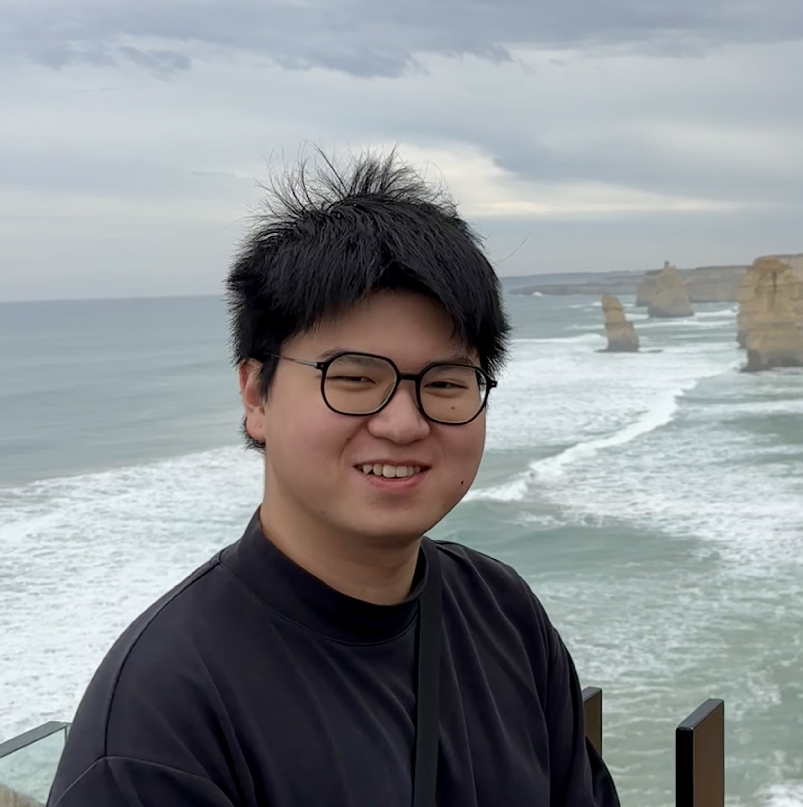
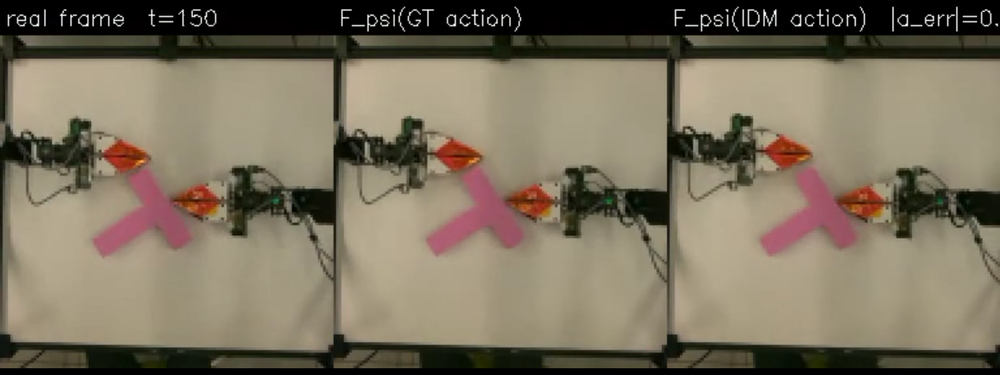
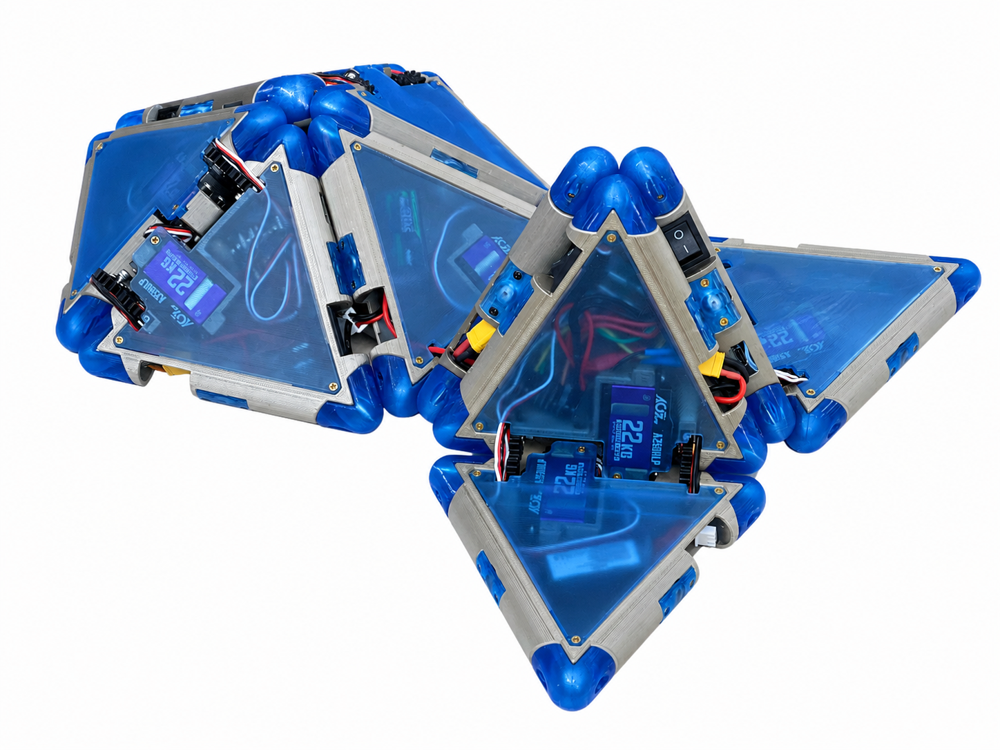

Junyan Liu
Mechanical Engineering — Robotics and Control
MS student at Columbia University
I am an MS student in Mechanical Engineering (Robotics and Control Track) at Columbia University. My background is in mechatronic engineering — a dual degree between Beijing Jiaotong University and the University of Wollongong, where coursework in embedded systems, finite element analysis, and control theory first drew me toward robotics.
I currently conduct research in Prof. Yunzhu Li's RoboPIL Lab, developing a lightweight world-action model for robotic manipulation, and in Prof. Hod Lipson's Creative Machines Lab, working on the control systems and simulation infrastructure for self-reproducing modular robots — research currently under review at the IROS 2026 Workshop. I also serve as a Teaching Assistant for Mechatronics & Embedded Micro at Columbia, and have built robots including a quadruped platform ("Pack-Pack") and a computer-vision tracking robot that won Best Use of Computer Vision at the MakeCU 2025 Hackathon.
Education
-
2025–Present
MS in Mechanical Engineering, Robotics and Control Track
Columbia University in the City of New York, New York, US
Coursework: Robotic Studio (Advanced), Robot Learning, Model Predictive Control, Introduction to Robotics.
-
2024–2025
BA in Mechatronic Engineering (Honours)
University of Wollongong, Wollongong, AU
Coursework: Applied Topics in Mechatronics, Reliability Engineering, Manufacturing Engineering Principles.
-
2021–2025
BA in Mechatronic Engineering
Beijing Jiaotong University, Beijing, CN
Coursework: Electronics, Programming for Engineers, Embedded System and Applications.
Honors & Awards
- Winner, Best Use of Computer Vision — MakeCU 2025 Hackathon (Columbia Robotics Club), Nov 2025
Research
My interests sit at the intersection of mechanical design, control, and simulation — currently focused on learning-based control for manipulation and locomotion, and on the mechanics and control systems that let physical robots build and reconfigure themselves. Below is my current work at Columbia; earlier research is in my CV.
-
Jun 2026–Present
World Action Model for Robotic Manipulation
RoboPIL Lab, Prof. Yunzhu Li (mentored by PhD student Kaifeng Zhang)

- Explored training-free control baselines for manipulation, including MPPI-based grasping with a Franka arm in the Newton simulator and MPPI-based atomic-task planning in RoboCasa, before converging on a learning-based direction.
- Currently developing a lightweight World Action Model (WAM) by extending the video-generation world model from Interactive World Simulator with a trainable action head, aiming to produce a baseline policy for manipulation evaluation.
- Iterating on the action-head architecture and training pipeline (in progress).
-
Feb 2026–Present
Replicate Project: Self-Reproducing Modular Robots
Creative Machines Lab, Prof. Hod Lipson

- Co-developed the teleoperated control system enabling physical module collection and docking: a browser-based control terminal issues discrete motion commands over a serial link to a host microcontroller, which wirelessly broadcasts commands to modules and receives periodic heartbeat status for real-time operator guidance.
- Programmed microcontroller (Arduino Nano ESP32) firmware implementing discrete motion primitives and a pre-programmed separation sequence, enabling a composite parent-offspring structure to reliably split into two independent, fully functional robots.
- Engineered a low-level magnetic physics engine to overcome MuJoCo's lack of native complex magnetic support, formulating an O(N²) magnetic calculation model with non-linear distance attenuation and velocity damping that validated the docking-force parameters later adopted for the physical magnetic docking interface.
- Migrated the simulation framework to MuJoCo/MJX and built a highly optimized C dynamic library bypassing the Python interpreter, achieving a 2.34x speedup per simulation step for large-scale random search and genetic algorithm evaluations.
Earlier research (2023–2025) on magnetic simulation and reinforcement learning is in my full CV.
Teaching Experience
-
2026–Present
Teaching Assistant — MECE4058E: Mechatronics & Embedded Micro
Columbia University (Instructor: Enrico Zordan)
- Help students complete lab exercises in embedded microcontroller programming (Assembly/C) and mechatronic systems (solenoids, stepper/DC motors, thermal systems, magnetic levitation), and grade lab results.
Earlier internship experience (2024–2025) is in my full CV.
Selected projects
-
Sep–Dec 2026
Quadruped Robot "Pack-Pack" — Robotic Studio
Columbia University
- Designed and built a custom quadruped robot from concept sketches to physical deployment, covering mechanical design, simulation, and control end-to-end.
- Engineered the mechanical structure in SolidWorks and assembled the physical prototype with a Raspberry Pi core controller and 8 servo motors (2 DOF per leg).
- Built a high-fidelity MuJoCo physics simulation to design, test, and evaluate locomotion strategies, implementing preset gaits, Random Search, Hill Climbing, and reinforcement learning.
- Achieved sim-to-real transfer of heuristic search algorithms, deploying locomotion policies onto physical hardware for a stable real-world walking speed of 26.47 cm/s.
-
Nov 2025
Google It: Computer-Vision Tracking Robot (MakeCU 2025 Hackathon)
4-person team, 24-hour hackathon
- Built an autonomous mobile robot, pivoting from a two-wheel self-balancing design to a three-wheel, camera-guided tracking robot after balance tuning proved infeasible in time.
- Implemented real-time ArUco marker detection and tracking on a Raspberry Pi with OpenCV, computing steering corrections from the marker's pixel offset to drive bus-servo-actuated wheels.
- Integrated ultrasonic obstacle avoidance and diagnosed hardware failures under time pressure — burned-out motors, slipping wheels, insufficient battery current.
- Won Best Use of Computer Vision at the hackathon.
Earlier projects (2021–2024), including a surgical planning system and a smart car challenge, are in my full CV.
Publications
Skills
- Programming & embedded systems: C/C++, Python, MATLAB, Arduino (ESP32), STM32
- Robotics, simulation & ML: MuJoCo/MJX, Deep Learning (U-Net)
- Design & analysis: SolidWorks, AutoCAD, Inventor, Photoshop, ANSYS Workbench, ANSYS Maxwell
- Tools & OS: Linux/Ubuntu, Git
Contact
I'm happy to talk about my research, share my CV, or answer any questions. The fastest way to reach me is email.
jl7293@columbia.edu